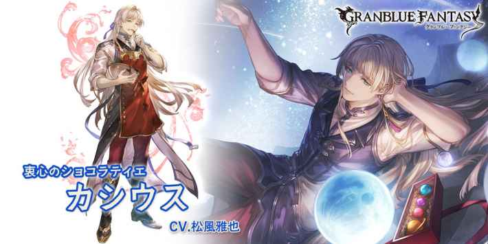
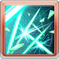
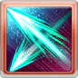
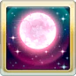

自己1技CD歸0
自己回復1個弱體效果
自己發動2技
水カシウス(バレンタイン)
基本資訊
| 定位 | 平衡 |
| 得意武器 | 格鬥/槍 |
| 種族 | 其他 |
| CV | 松風雅也 |
立繪
上限解放前||上限解放後奧義
| ルナ･デコラシオン | |
| 水屬性4.5倍傷害 自己所有技能CD-1 予傷上升(最多10萬/2T) |
主動技能
|  CD:5 |
ミラージュサイン |
| 敵方隨機目標8次水屬性1倍傷害 驅散一個效果 |
|
|  CD:7 |
スタッグエッジ |
| 敵方隨機目標2次水屬性2.5倍傷害 我方水屬性角色HP回復20%(最多2214) 我方水屬性角色回復一個弱體效果 |
|
|  CD:10(2回合後) |
ルナ･パラドックス |
| 賦予自己月徵效果(永久/無法消除) └奧義發動時追加發動1技 └水屬性角色使用技能時，ルナ･シンボルLv+1 └ルナ･シンボルLv5時，自己追加發動1技，ルナ･シンボルLv歸0 自己其他技能CD歸0 |
被動技能
|
脊椎反射回路II |
| 敵方發動特動時 自己1技CD歸0 自己回復1個弱體效果 |
|
|
ショコラアーツ |
| 我方成功驅散敵方強化效果時 自己發動2技 |